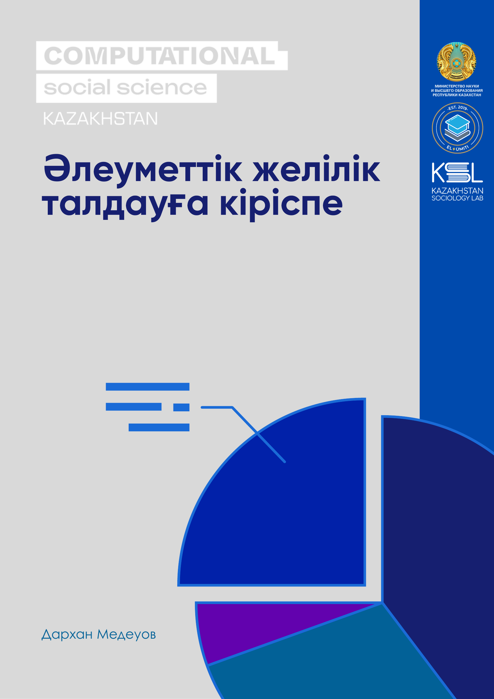

Әлеуметтік желілік талдауға кіріспе

Бұл кітаптың қазақ тіліндегі нұсқасы дайындалуда.
Орыс тіліндегі нұсқасы: https://darkhanmedeuov.github.io/intro_sna_book/.

Бұл кітаптың қазақ тіліндегі нұсқасы дайындалуда.
Орыс тіліндегі нұсқасы: https://darkhanmedeuov.github.io/intro_sna_book/.